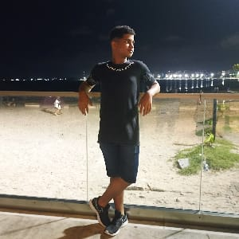

Matheus Sebastian Vieira da Silva Santos
Serie:(921_C)Integrado ao curso(Desenvolvimento de Sistemas)

Data de Nascimento:(24/05/2010)
Eu me Chamo Matheus Tenho 15 Anos,Não Gosto de Ler Livros Mas Gosto de Praticar Esportes Como Vôlei,Badminton Natação entre outros.Meus hobbies creio que seja jogar Jogos Eletronicos.E além de ser meus hobbies são os meus interesses também.
- Aprendi como programar em Introdução a Programação.
- Aprendi como criar um site com Programação WEB.
- Aprendi como fucionam e quais são os componetes de um pc com Fundamentos da Informática.
Descrição do Curso:É um curso de cerca de 3 anos de duração, onde o aluno estuda tanto as matérias do ensino médio quanto conteúdos de informática. Durante o curso, você aprende a:
- Programar(criar aplicativos e sistemas).
- Trabalhar com banco de dados.
- Desenvolver sites e softwares.
- Testar e corrigir programas.
- Entender lógica de promação e algoritimos.
- Manter e configurar sistemas e redes.